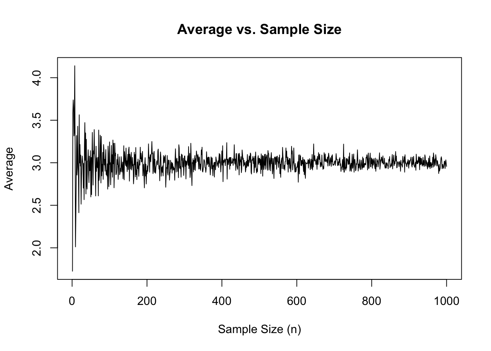
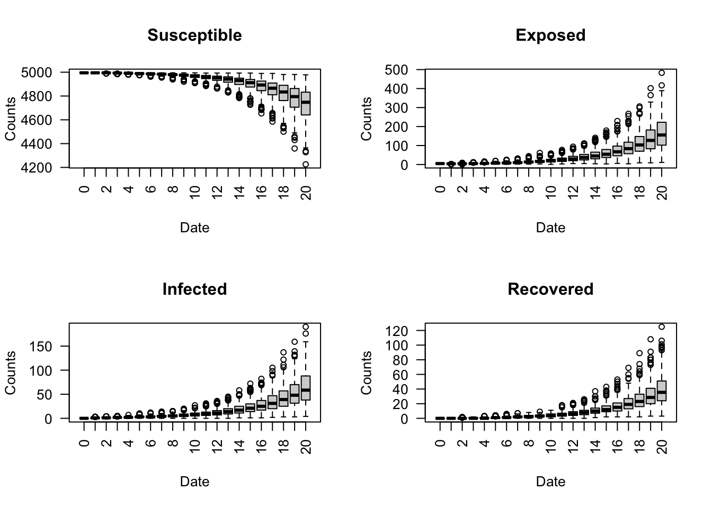

Part 3a: Multiple Simulation Runs
In statistics, the Law of Large Numbers ensures that as the sample size increases, the sample mean (average) of a random variable will converge to the population mean. The same principle applies when using multiple runs to simulate epidemiological models. As the number of epiworldR simulations increases, the sample means of the reproductive number or model parameters, for example, will converge to their corresponding population means.
In epiworldR, the run_multiple() function allows us to run a specified number of simulations using the same model object to compare model results across several separate and repeated simulations. In this part of the workshop, we’ll walk through an example of using this function.
Example Scenario: 500 Simulations of Measles
The example implements the following scenario:
- Disease: Measles
- Population size: 5,000 agents
- Initial Disease Prevalence: 0.001
- Contact Rate: 2
- Transmission Rate: 0.5
- Incubation Days: 7
- Recovery Rate: \(\frac{1}{7}\)
We’ll run 500 simulations of this model and compare the results.
Model Setup
Use the ModelSEIRCONN() function to initialize the measles model.
Generate Saver
Use the make_saver() function to create a saver object. The saver will extract the total_hist and reproductive data from the model object after each run so the results can be compared.
Note
You can generate a saver for any metric compatible with the make_saver() function. See the details section of the make_saver() help manual for more (?make_saver).
Run 500 Simulations
Use the run_multiple() function to simulate the measles model 500 times (nsims = 500) with each simulation running for 50 days (ndays = 50). Add the saver created in the previous step and set the number of threads to 4 (nthread = 4) for parallel computing.
Code
Starting multiple runs (500)
_________________________________________________________________________
_________________________________________________________________________
||||||||||||||||||||||||||||||||||||||||||||||||||||||||||||||||||||||||| done.
done.Note that we do not run the model with a random seed, because we want each model run to have random differences.
Visualize Results
Create a boxplot of the four SEIR states for each day across the 500 simulations using the run_multiple_get_results() function. For this example, we filter the data to observe only the first 20 days.
Code

Create a boxplot of the reproductive number for all 50 days across the 500 simulations using the run_multiple_get_results() function.
As expected, the reproductive number on average, decreases over time.
Exercise 1
Consider a Hepatitis A outbreak with the following parameters:
- Population size: 10,000 agents
- Initial Prevalence: 0.01
- Contact Rate: 2
- Transmission Rate: 0.5
- Incubation Days: 2
- Recovery Rate: \(\frac{1}{7}\)
Using the ModelSEIRCONN() and run_multiple() functions, run 100 simulations each for 40 days. Plot the average reproductive number for the first 20 days.
Exercise 2
Using the ModelSEIRCONN object from Exercise 1, add a vaccine tool (tool()) with the following parameters:
- Susceptibility Reduction: 0.9
- Transmission Reduction: 0.5
- Death Reduction: 0.9
- Recovery Enhancer: 0.5
- Prevalence: 0.5
However, instead of adding the vaccine at the start of the simulation, introduce the vaccine on Day 10 to 50% of the population using the globalevent_tool() and add_globalevent() functions.
How does that change the average reproductive number for the first 20 days over 100 simulations?